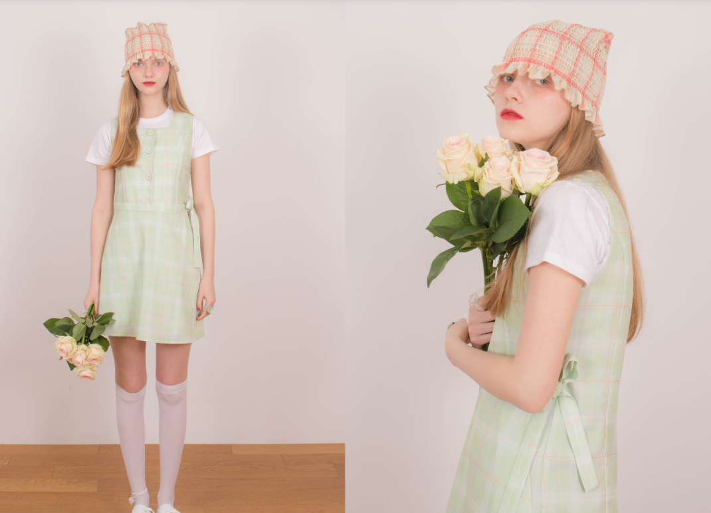
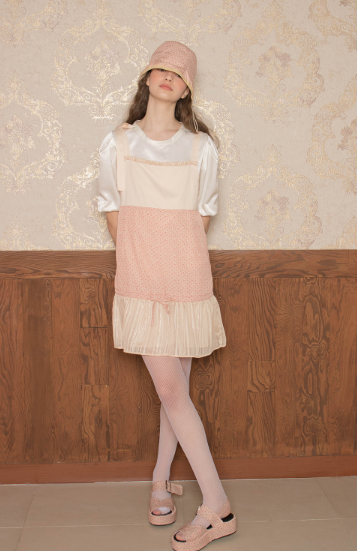

걸리쉬란 미국과 유럽의 근대에 소녀들이 입던 굉장히 러블리한 스타일을 가리킨다. 세연이가 그렇게 자주 끌리는 스타일은 아니지만 가끔 여성스럽게 입고 싶을때는 이쪽이 많이 끌린다. 세연이가 2019년 여름 환장했던 브랜드인 시눈 또한 이러한 분위기를 현대적으로 승화한 브랜드라고 볼수 있다. 하이틴과 걸리쉬의 차이는 하이틴이 고등학생과 20대 초반의 느낌이라면 걸리쉬는 조금더 어린 느낌이라고 볼수 있다. 또한 하이틴은 걸리쉬에 비해 더욱 몸의 라인을 강조하는 옷들이 많다. 세연이가 좋아하는 것은 걸리쉬 하면서도 한 15%정도의 모던함이 들어간 것을 좋아한다.
 